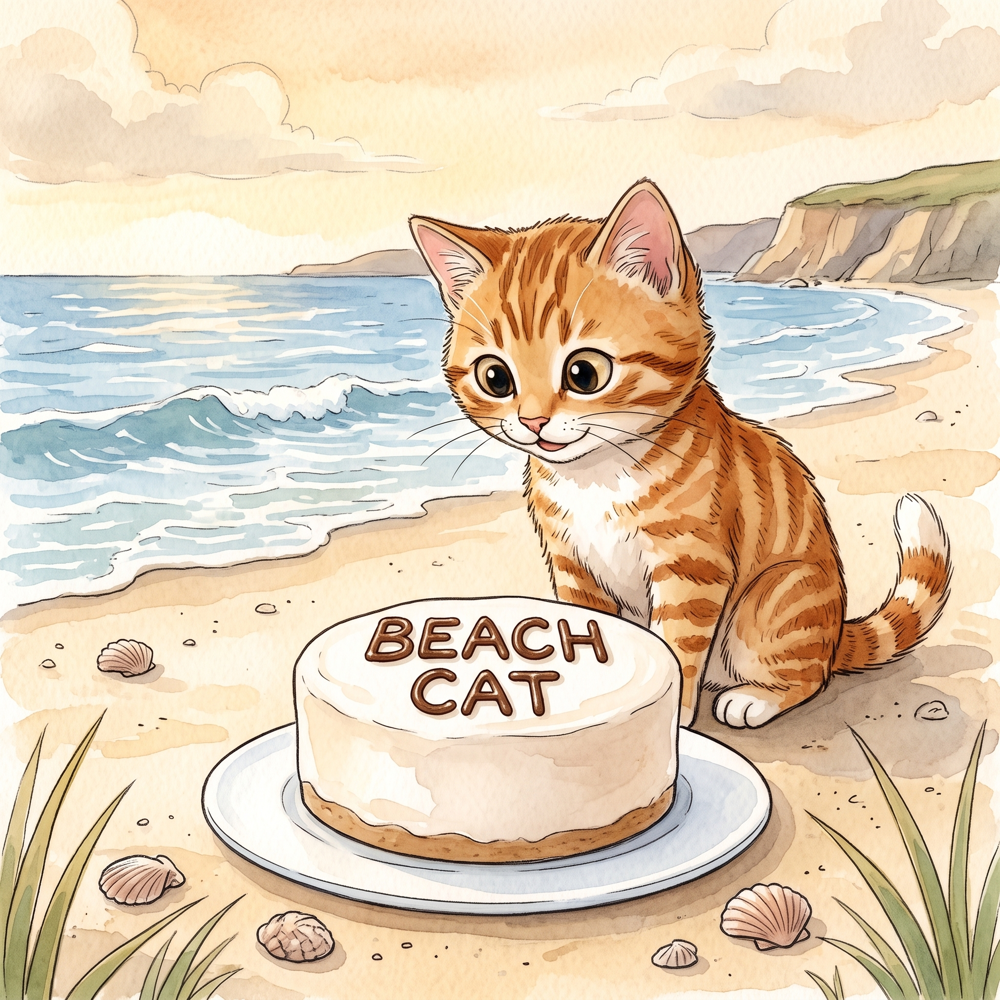

Step 1 · Say the Sound
a_e
In cake, the quiet e helps a say its name.
cake
bake
plate
Read one gentle story with Magic E. A quiet e can help the vowel say its name, like in cake.

In cake, the quiet e helps a say its name.
Beach Cat can bake.
He can bake a cake.
The cake is on a plate.
Beach Cat sees a name.
The name is Beach Cat.
Beach Cat likes the cake.
Now you read Magic E words like cake.
That’s a win.
If it still feels fun, read the story again.